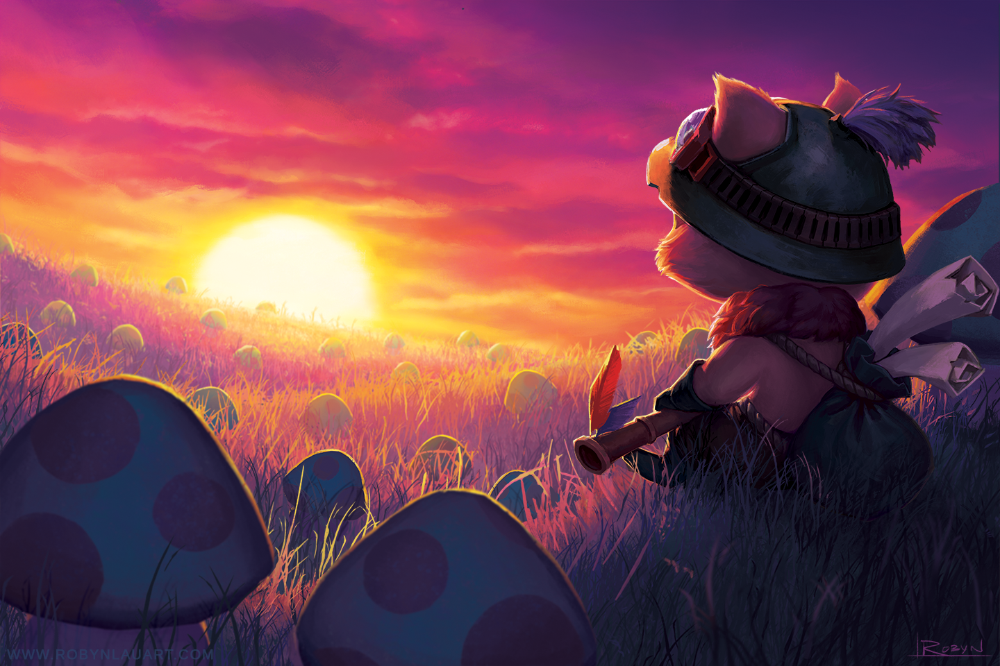

About Teemo
Teemo scouts the world with boundless enthusiasm and a cheerful spirit. A yordle with an unwavering sense of morality, he takes pride in following the Bandle Scout's Code, sometimes with such eagerness that he is unaware of the broader consequences of his actions. Though some say the existence of the Scouts is questionable, one thing is for certain: Teemo's conviction is nothing to be trifled with.
Abilities
Passive
Toxic Shot:
Attacks deal bonus magic damage on impact and poisons the target, deal additional magic damage over time.
Active Abilities
- Blind Shot:
Shoots a dart, deals magic damage and blinds the target - Move Quick:
PASSIVE: Grants if an enemy champion or structure has not damaged Teemo within the last 5 seconds.
ACTIVE: Rolls a short distance forward and sprints for a duration. During this time, Move Quick's bonus is doubled and cannot be removed by damage. -
Guerrilla Warfare:
ACTIVE: After a while, become invisible. Moving outside of brush for more than couples of seconds ends this effect.
After exiting , gain bonus attack speed for a duration.
Hide from champions by keeping them out of detection radius. Enemy turrets reveal camouflaged units near them. Attacks and offensive abilities end early.
Ultimate
PASSIVE: Teemo stores a Noxious Trap charge periodically, up to a maximum amount at once.
ACTIVE: Tosses a stored mushroom as a trap that detonates if an enemy steps on it, dealing magic damage and creating a poisonous puddle that deals magic damage over time. Enemies within the puddle are also slowed.
Traps lasts for a duration and takes time to arm and stealth. Up to a cap can be held at once. If a thrown trap lands on another trap, it will bounce further before planting.
Click HERE to go to the Wild Rift Official page for more info